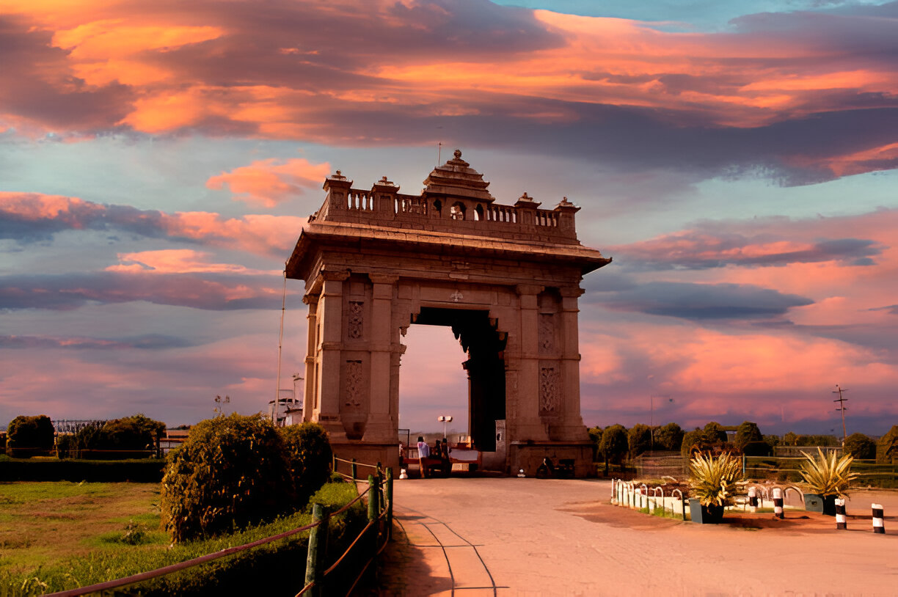

About Mysore
Mysore is famous for its grand palaces, vibrant culture, and historic temples. The city is known for its Mysore Dasara celebrations. Mysore is also a major center for the production of premium silk, sandalwood, and incense.
Popular Spots
- Mysore Palace
- Chamundi Hills & Chamundeshwari Temple
- Brindavan Gardens